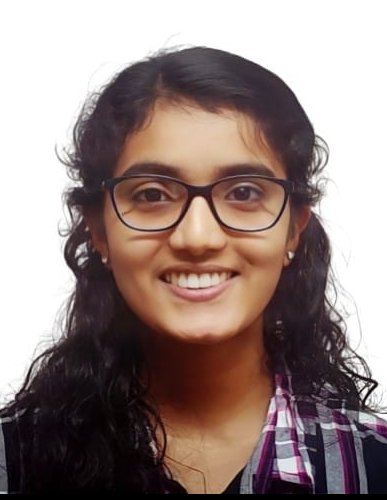

Gopika Gopikrishnan
I am a PhD student working at the intersection of deep learning and medical ultrasound imaging. My work focuses on deep beamforming architectures that adapt to tissue structure and imaging context, bridging classical signal processing with generalized neural network design.
I am currently affiliated with the Ultrasound Imaging Lab and SITxNVIDIA AI Centre, Singapore Institute of Technology, advised by Dr. Mahesh Raveendranatha Panicker.
I completed my B.Tech in Electronics and Communication Engineering with a Minor in Machine Learning at NSS College of Engineering, Palakkad under APJ Abdul Kalam Technological University.
I am passionate about developing computational tools that make medical diagnostics more precise and accessible, particularly in resource-constrained settings.

Projects & Publications
◉ Research Projects
Deep learning framework combining three expert U-Nets via a tissue-aware gating network for adaptive, task-specific ultrasound image reconstruction.
Adaptive Depth-Agnostic Patch-wise Tunable multibeamformer — an interpretable alternative to black-box CNNs exploiting physical priors under limited training data.
Compact planar multiresonator and U-shaped slot resonator designs for high-capacity chipless RFID tags in IoT applications. IEEE APS-funded project.
Design and development of an equalizer subsystem for a high-speed serializer-deserializer (SerDes) — B.Tech final year project.
Implemented an FPGA-based cryptography system programmed in Verilog HDL using Xilinx Vivado, during a remote internship at IIT Guwahati.
Research on time-slicing high-throughput Wi-Fi networks using centralized queuing and scheduling — Summer Research Fellowship at IISc Bengaluru.
B.Tech minor miniproject for automated attendance tracking using machine learning-based recognition techniques.
Embedded system for real-time fall detection and emergency alerting, designed for elderly care applications.
◉ Journal Publications
-
Compact Planar Multiresonator with High Surface Encoding Capacity for Chipless RFID Tag ApplicationsGopika Gopikrishnan, M Sumi, AI Harikrishnan, Lija Arun, R Saranya, G VinodResults in Engineering, Elsevier, 2025
◉ Conference Publications
-
ADAPT: Adaptive Depth-Agnostic Patch-wise Tunable Multibeamformer for Ultrasound ImagingAcceptedGopika Gopikrishnan et al.International Symposium on Biomedical Imaging (ISBI) 2026
-
Planar U-Shaped Slot Multiresonator-based Chipless RFID TagsGopika Gopikrishnan, M Sumi, AI Harikrishnan, R Saranya, G Vinod3rd International Conference on AI for IoT (AIIoT 2024), Chennai, India
◉ Patents
-
Enhanced Chipless RFID Resonator DesignPatent Filed